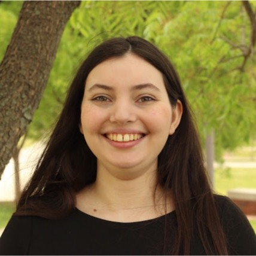

style="color:coral;" About Me

I am a PhD candidate in the department of Atmospheric and Climate Science at the University of Washington. I work with Prof. Cecilia Bitz on Arctic cyclones and Arctic boundary layer meteorology. I am a National Defense Science and Engineering Graduate Fellow, and in Autumn 2026, I will be a Graubard Fellow in the UW Program on Climate Change.